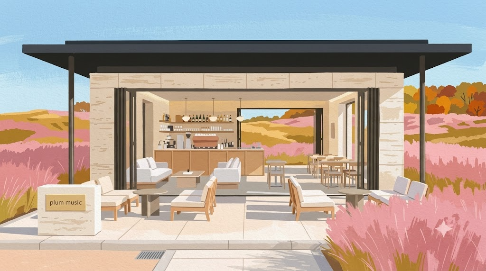
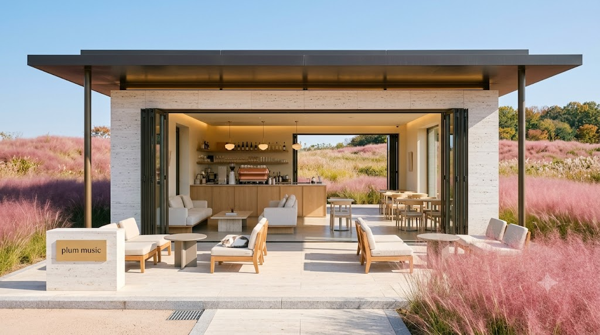
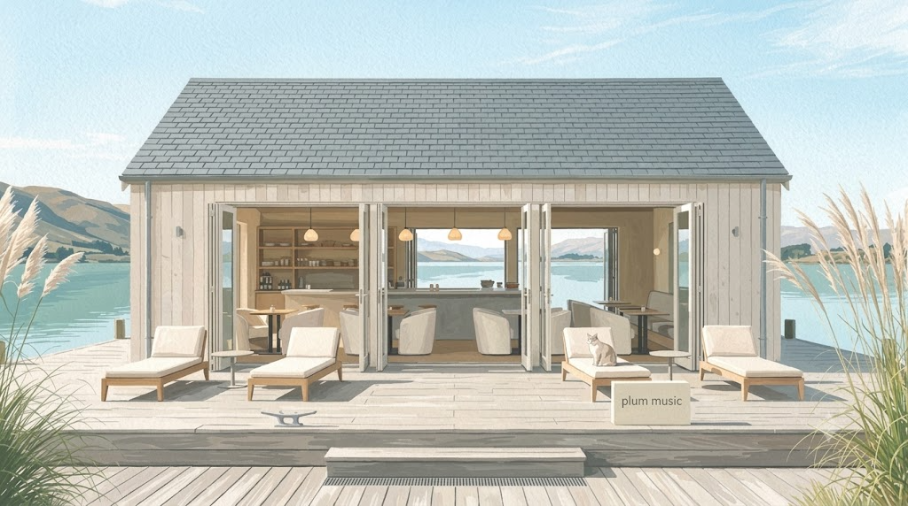
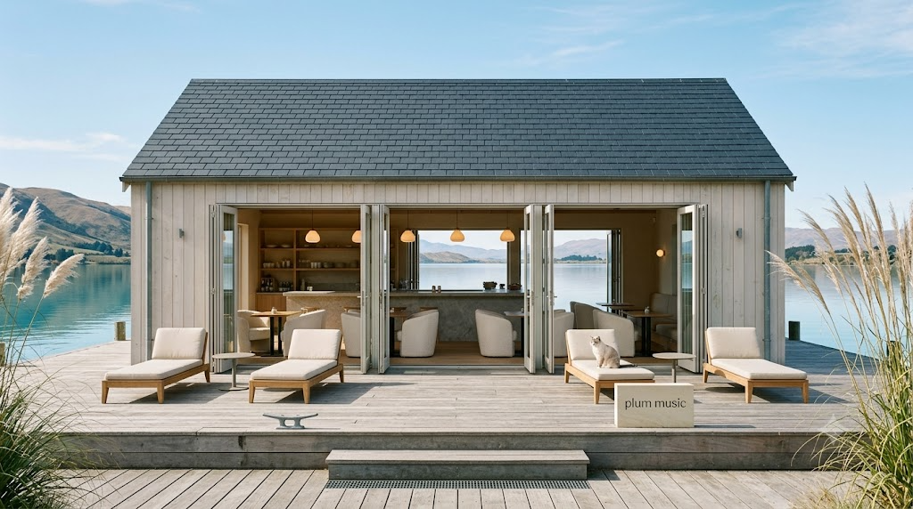
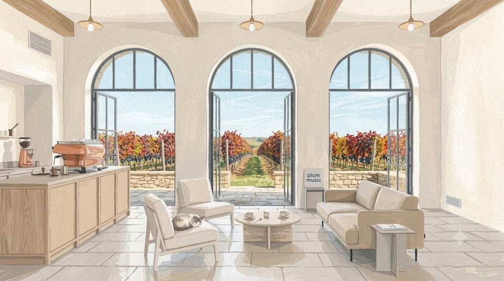
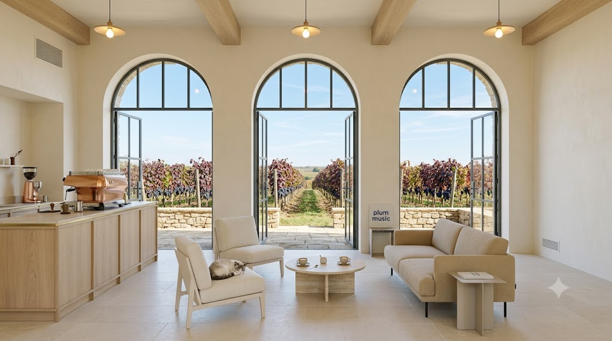
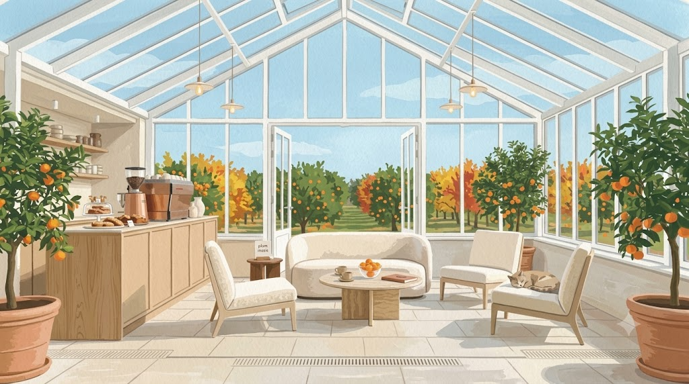
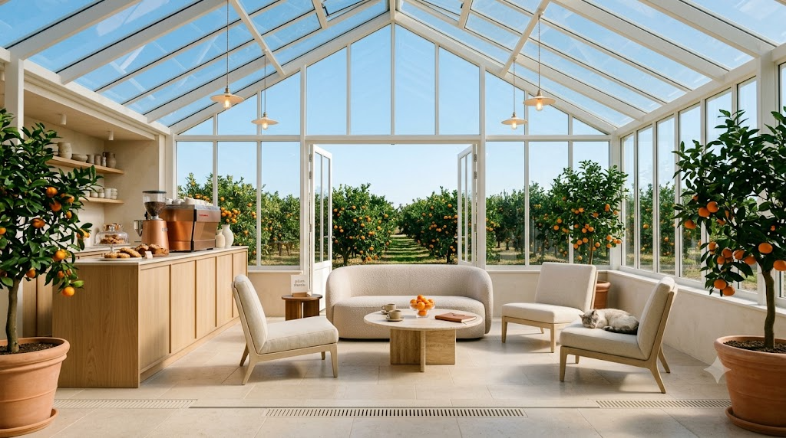

발행 10-02(금) 08:00 · 테마 "몸도 마음도 가벼워져요" · EP13 붉은 단풍 · EP14 노란 은행 · EP15 황금 낙엽송과 겹치지 않는 색 · 마음에 드는 안의 알파벳만 알려주세요. 작은 사진은 재도색 전 실사 원본입니다.
외관 · 트래버틴·브론즈 파빌리온 · 폴딩 유리문 전부 열림 · 사방 분홍 핑크뮬리 · 관통해 들판


실사 원본외관 · 석회 목조+유리 · 문 전부 열어 관통해 청록 호수 · 양옆 은빛 억새


실사 원본실내 · 아치 철제 유리문 3개 활짝 · 보라 포도송이와 버건디 포도잎 · 크림 린넨 라운지


실사 원본실내 · 흰 철골 온실 · 테라코타 화분 귤나무 · 문 너머 귤밭 · 귤 주황 액센트


실사 원본